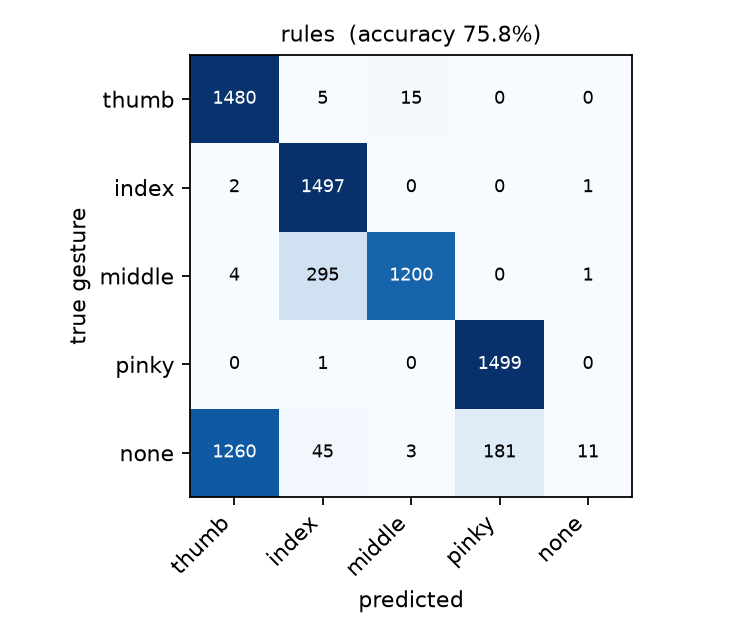
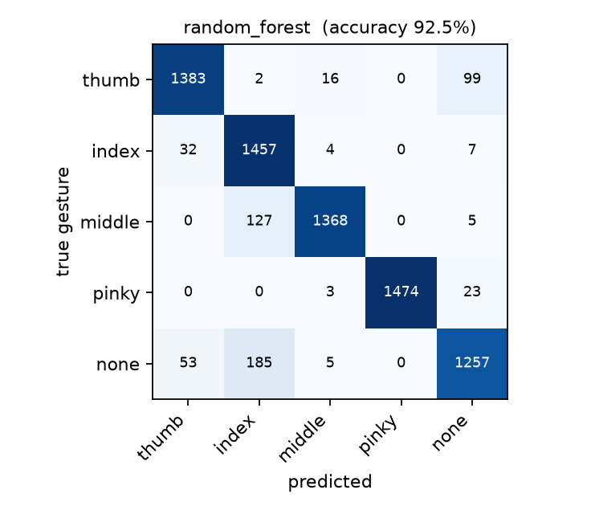
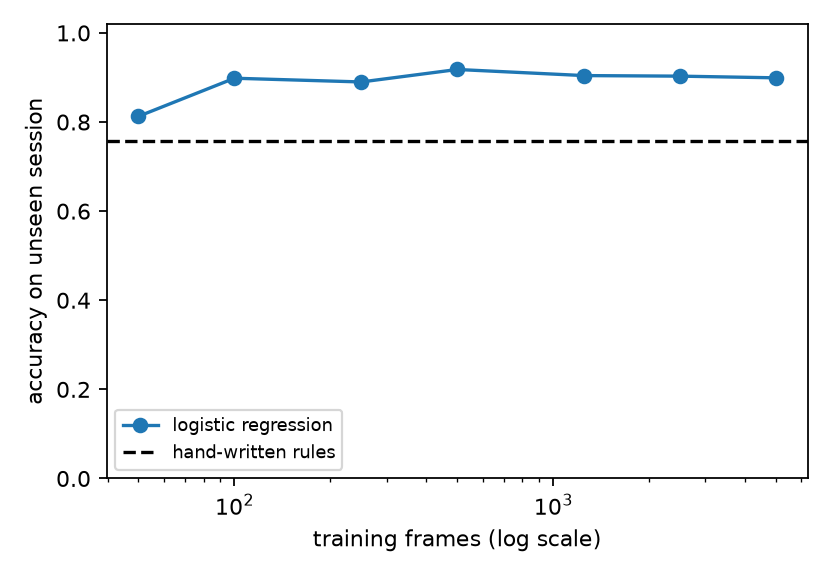

A follow-up experiment to the 2024 final-year project 3D Model Simulation Using Hand Gestures · Haseeb Ur Rehman · November 2026 · code and data
In the 2024 project, MediaPipe located 21 hand landmarks and rules written by hand decided which of five driving gestures was shown. We set those rules by trial and error and never measured them. This experiment asks: on the same recorded landmarks, does a small trained classifier recognise the gestures better than the rules, and how much data does it need?
I recorded 7,500 frames of my own hand with a laptop webcam (1280 × 720): 1,500 per gesture, in 3 sessions on 22 and 23 November 2026. A session is one sitting; the three were recorded at different times of day and distances from the camera (median hand size between 191 and 333 pixels). Each frame stores the 21 landmarks returned by the MediaPipe Hand Landmarker and the gesture I was asked to show. Gestures: thumb up (move straight), index finger up (turn right), middle finger up (turn left), little finger up (move back), closed fist (stop). No frame was removed.
recognize_gesture from the 2024 code, unchanged, thresholds included.
It compares the heights of the five fingertips and names the highest one.| Method | Accuracy, all test frames | Mean of the three sessions | Test on s1 | Test on s2 | Test on s3 | Macro F1 | ms per frame |
|---|---|---|---|---|---|---|---|
| Hand-written rules (2024) | 75.8% | 76.4% | 74.9% | 74.4% | 80.0% | 0.687 | 0.04 |
| Logistic regression | 92.5% | 89.9% | 96.4% | 89.2% | 84.1% | 0.925 | 0.27 |
| k-nearest neighbours (k = 5) | 84.2% | 83.7% | 85.0% | 81.9% | 84.1% | 0.842 | 1.42 |
| Random forest (200 trees) | 92.5% | 92.2% | 92.9% | 93.8% | 90.0% | 0.926 | 10.21 |
The first column pools all 7,500 test frames, so session 1, which holds three recordings, weighs more. The second gives each session the same weight. I report both; they agree on the order of the methods.
| Share of frames recognised correctly | Hand-written rules (2024) | Logistic regression | k-nearest neighbours (k = 5) | Random forest (200 trees) |
|---|---|---|---|---|
| Thumb | 98.7% | 82.8% | 88.5% | 92.2% |
| Index | 99.8% | 99.5% | 83.9% | 97.1% |
| Middle | 80.0% | 89.7% | 86.8% | 91.2% |
| Little finger | 99.9% | 96.5% | 97.1% | 98.3% |
| Closed fist | 0.7% | 94.1% | 64.7% | 83.8% |



model_complexity=0.For this task the boundary between rules and a learned model follows how easily a gesture can be defined. Where the definition is one comparison (which fingertip is highest), the hand-written rules are accurate, fast and need no data. Where the definition is the absence of something (no finger raised), they fail, and a small classifier trained on a few hundred frames does much better. Testing other people's hands is the next step.
Reproduce: evaluate.py on the CSV files in data/ gives these numbers (seed 0).
I recorded all data and ran the experiment. The scripts were written with the help of an AI coding assistant; the
rules are from the 2024 team project (three students, supervisor Dr. Saif ul Islam).